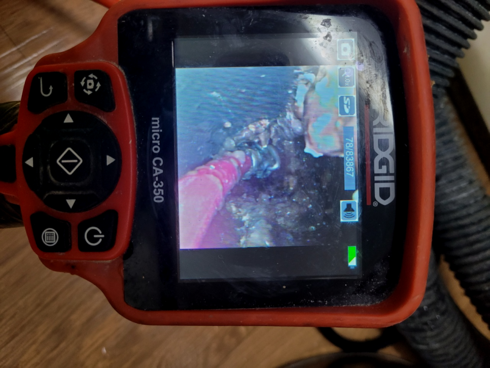
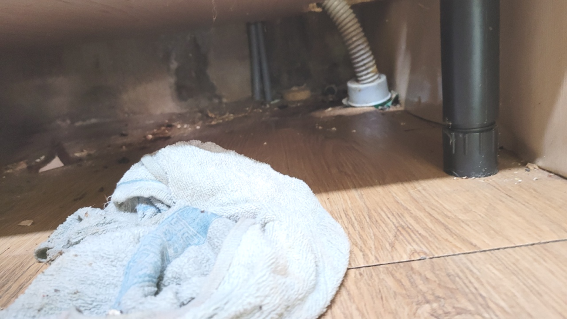
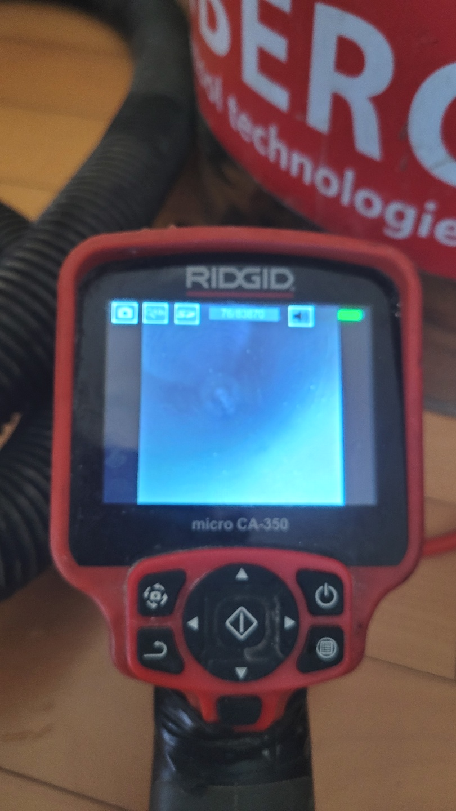
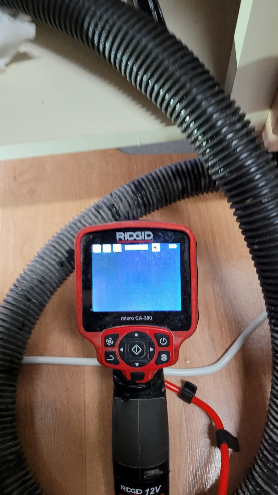
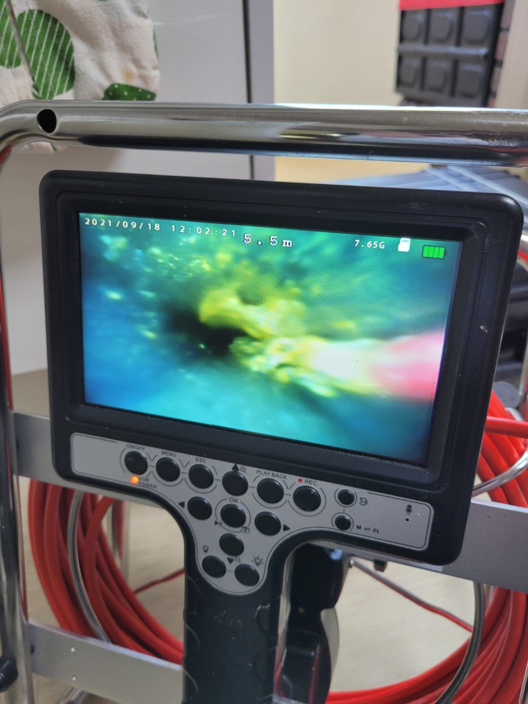
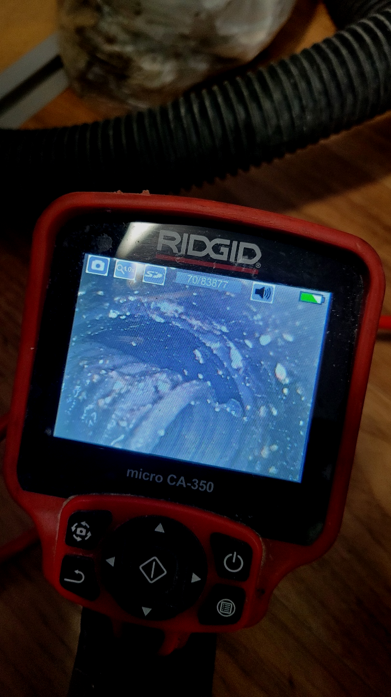

🏠 의왕시 학의동 싱크대막힘뚫음 청계동하수구역류 해결합니다
용인 싱크대막힘 전문 시공 후기

📋 작업 개요
- 위치: 용인
- 서비스 유형: 싱크대막힘, 변기막힘, 하수구막힘, 배관막힘, 역류해결, 뚫는업체, 배관청소, 배관보수
- 작업 일시: 2023. 9. 17. 23:22
- 업체명: 하수구수사대 (010-5615-2118)
🔍 문제 상황
모든 사람들이 살아가는 공간과 환경은 비슷비슷하겠지만 하수배관의 위치나 모양,크기는 모두 다른 모습을 보이고 있습니다.
시중에 판매하는 약품이나 돌돌이 기계는 운좋게 효과를 볼수도 있지만 실패할 가능성이 상당히 높은데다 심지어 배출구막힘증상이 더욱더 심해지기도 합니다.
의왕시 학의동 싱크대막힘뚫음 청계동하수구역류 해결합니다
부족한 장비로 무턱대고 작업을 시작하면 분쇄물들이 배관 속에 남아 재발의 주요 원인이 되어 버립니다. 하수뚫음 작업을 했는데도 불구하고 재발한 상황이라면 맡긴 업체가 뚫는 장비를 준비해 놨는지 알아보는것도 좋습니다.

🔎 원인 분석
💡 전문가 진단: 의왕시 학의동 싱크대막힘뚫음 청계동하수구역류 해결합니다
수도권 모든 지역에서 경력 있는 하수기사님들이 대기하고 있기 때문에 계신 지역이 어디든지 방문 드릴 수 있으며 아무리 심각한 상황이라고 할지라도 빠르게 대처해 드리기 위해서 1시간 이내 도착을 약속하고 있습니다.
얼마 전 다녀왔던 현장은 혼자서 퇴수구뚫어보시려다가 한참을 노력해도 해결이 되지 않아 전문 업체를 찾게 되셨다고 하는데요. 방문 드렸던 현장은 자주 막힘 증상이 보였던 곳이고 뚫은지 얼마 안 된 상태에서 또다시 문제가 발생해 확실한 해결을 원하셨습니다.
배출구막힘은 얼마나 비용이 들어갈지 모르기 때문에 고민되는 것은 당연합니다만, 시간이 흐를수록 들어가는 비용도 늘어나기 때문에 증상이 발견됐을 때 당장 고칠 생각이 없더라도 얼마나 심각한 것인지 견적 정도는 받아보시고 고려해 보시는 것이 좋습니다.
여러번 강조 드리고 싶은 부분은 스스로 시도하시는것도 좋지만 제대로 된 책임감 넘치는 곳으로 알아보셔야 해요. 하수막힘 진단해 보고 쉬운 현장인지 실력자가 아니면 알기가 쉽지 않답니다. 급하다고 해서 무리하게 시도해버리면 더욱 나빠질수 있어요.
배수관으로 배수가 안되거나 느리게 넘치고 있다면 이러한 것들을 고쳐드리는 경력자를 찾아내서 실력자를 이용하셔야 합니다.배출구막힘 무수히도 많은 업체들이 있는데 업차마다 다른 점이 있어서 신중을 기해야 합니다.

🔧 작업 과정
그런데도불구 이런것들은 많이들 지켜오고있으며 철저히 퇴수구 관리하는분들은 손이닿는곳까지 배관청소를해주거나 교체작업도 하시곤합니다.이렇게해주어도 막혀버리기때문에 경력자를 찾아나서게되죠
방문하는 전문배관공들도 좋은실력을가지고있는 실력자들로만 이루어져있어요.처음하시는분이 서투르게 하수를 만지게된다면 경험이없기때문에 배수관이손상되고 이게끝이아닌 다른상황들도 발생시킬수있기에 실력도 한몫하는데요
이렇기때문에 전문적인지식은 금방해결가능한 방법을주게되는데요. 스스로어떻게든 배출구 뚫을려하는생각이 가져오게되는손해는 시간적금전적 문제뿐만아니라 심리적으로도 손해가발생하게돼요.
견적비용이 비싸지않을까 불안해지시고 수리하지못할까봐 믿지못하시곤합니다.맡기시려고할때 배출구 전문설비회사에 의뢰하시고싶으시다면 저희회사를 소개하려고합니다.
어느곳에 의뢰해야 괴로운일을 벗어나게될까요? 블로그에 많이있는 많고많은 하수 배관회사들중 어디로골라야 하는지 어려우실겁니다.경력자분들마다 수리방법도 다르고 견적비용이 다틀려서 처음으로 뚫으신다면 어찌해야할지 모를수있습니다.
카메라를 넣자마자 희뿌연 이물질들과 함께 단단하게 덩어리로 뭉쳐져있는 이물질들이 배수구 곳곳에 꽉 막혀있는 게 느껴졌습니다.
일 년에 한두 번으로 귀찮은 과정 없이 더욱 나은 결과로 위생적이게 관리할 수 있어 고객님들이 좋아하시는배수구 배관 케어 서비스를 정기적으로 이용해 보세요. 막힌 곳 뚫어주는 곳 뿐만이 아닌 정기 청소를 통해 나의 주거공간을 더욱 쾌적하게 만들어보세요.
또한 시공이 필요한 지점도 관로 탐지기를 통해 발견, 사장님께 알려드렸습니다. 저희는 이처럼 작업의 규모를 가리지 않고 빠르게 출동하여 해결을 도와드립니다.


✅ 작업 완료
우리는 12개월 내로 다시 막히면 즉각 방문 드리고 아무 보수 없이 다시금 뚫어드립니다. 한차례 뚫어드릴 때 재발 없이 조치할 자신이 있기 때문입니다.
#하수구막힘 #하수구뚫음 #하수구역류 #씽크대막힘 #싱크대역류 #오수관막힘 #하수구청소 #욕실하수구막힘 #변기막힘 #하수구뚫는비용 #싱크대수리 #화장실막힘




⚠️ 주방 싱크대 배관 막힘 예방 수칙
- ✅ 기름기가 묻은 식기나 프라이팬은 설거지 전 키친타올로 반드시 기름때를 닦아내세요.
- ✅ 주기적으로 싱크대 개수대에 뜨거운 물을 가득 받아 한 번에 내려 배관 내부 기름을 씻어내세요.
- ✅ 배수구 거름망을 미세한 필터로 사용하시고 음식물 찌꺼기가 틈으로 새어 들지 않게 관리하세요.
- ✅ 베이킹소다와 식초를 뜨거운 물과 함께 일주일에 한 번씩 부어주면 배관 살균과 막힘 예방에 좋습니다.
💡 핵심 정리
- 확실한 장비 작업(내시경 점검 및 샤프트 스케일링)으로 원인을 뿌리 뽑습니다.
- 작업 후 1년 이내에 동일한 부위 재발 시 100% 무상 A/S 서비스를 보장합니다.
- 서울 · 경기 · 인천 전 지역에 24시간 언제든 긴급 출동할 수 있도록 항시 대기 중입니다.
❓ 자주 묻는 질문 (FAQ)
🚨 용인 싱크대막힘 문제로 고민이신가요?
정확한 원인 진단과 확실한 시공으로 재발 없는 해결을 약속드립니다.
24시간 긴급 출동 | 서울 · 경기 · 인천 전지역 | 1년 내 재발 시 무상 A/S